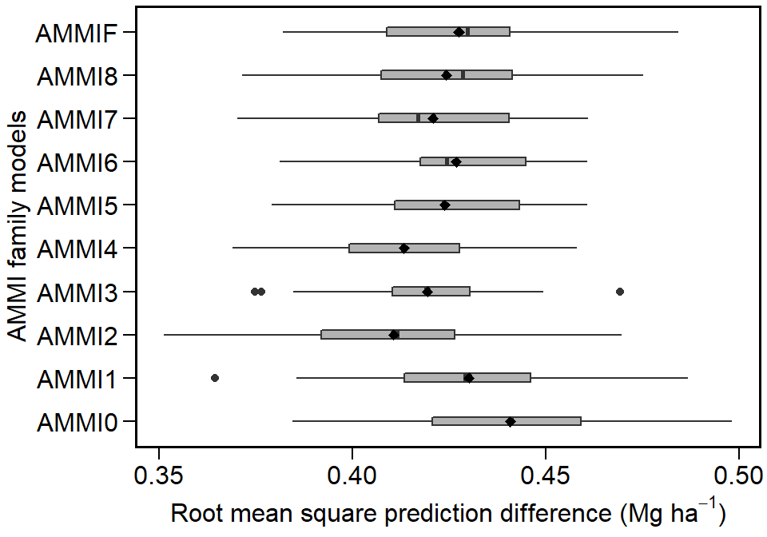
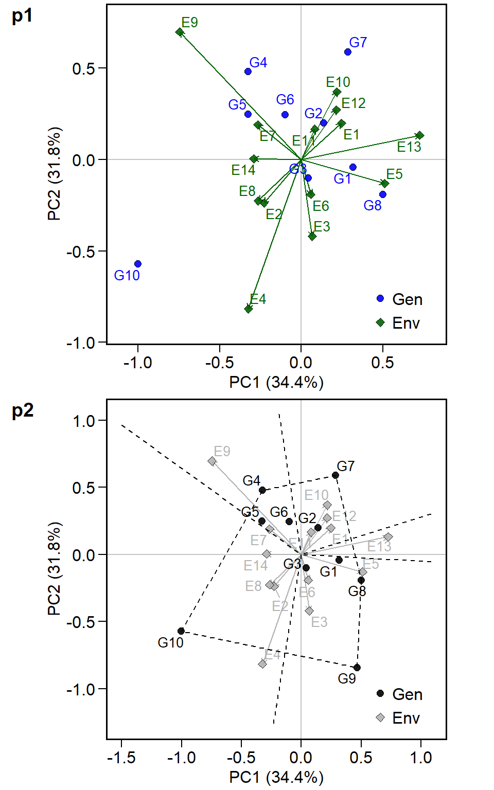

Multi-environment Trial Analysis using AMMI and BLUP
Source:vignettes/vignettes_METAAB.Rmd
vignettes_METAAB.RmdThe METAAB (Multi-environment Trials Analysis using AMMI and BLUP) package provides useful functions for analyzing multi-environment trial data using Additive Main Effects and Multiplicative Interaction (AMMI) and Best Linear Unbiased Prediction (BLUP) models. The main features include, but are not limited to:
- Cross-validation procedures for AMMI-family and BLUP models;
- Estimation of AMMI models based on number of IPCAs;
- Prediction in mixed-effect models;
- Variance components and genetic parameters in mixed-effect models;
- Graphics tools for generating biplots.
Extending the METAAB package
The complete functionality of the METAAB package, combining theory, programming, and outputs may be view at https://tiagoolivoto.github.io/METAAB/index.html. You are welcome to visit it.
Brief examples
The package kableExtra and cowplot were used to generate the tables and arranging the graphics of this vignette. For reproducing brief examples we will use the dataset data_ge that contains data on two variables assessed in 10 genotypes growing in in 11 environments. For more details see ?data_ge.
## Classes 'tbl_df', 'tbl' and 'data.frame': 420 obs. of 5 variables:
## $ ENV: Factor w/ 14 levels "E1","E10","E11",..: 1 1 1 1 1 1 1 1 1 1 ...
## $ GEN: Factor w/ 10 levels "G1","G10","G2",..: 1 1 1 3 3 3 4 4 4 5 ...
## $ REP: Factor w/ 3 levels "1","2","3": 1 2 3 1 2 3 1 2 3 1 ...
## $ GY : num 2.17 2.5 2.43 3.21 2.93 ...
## $ HM : num 44.9 46.9 47.8 45.2 45.3 ...Cross-validation procedures
CVAL = validation.AMMIF(data_ge,
resp = GY,
gen = GEN,
env = ENV,
rep = REP,
nboot = 10,
nrepval = 2)
plot(CVAL)
Fitting the model
The AMMI model is fitted with the function WAAS.AMMI(). For more details, please see ?WAAS.AMMI.
model <- WAAS.AMMI(data_ge,
resp = GY,
gen = GEN,
env = ENV,
rep = REP)## Done!Biplots
ggplot2-based graphics are easily obtained in METAAB package. Please, note that since WAAS.AMMI() function allows analyzing multiple variables at the same time, e.g., resp = c(v1, v2, …), the output model is a list, in this case with one element, GY. For example, the well-known AMMI2 biplot may be obtained as follows.
library(cowplot)
p1 <- plot.scores(model$GY)
p2 <- plot.scores(model$GY,
type = 1,
polygon = TRUE,
col.gen = "black",
col.env = "gray70",
col.segm.env = "gray70",
axis.expand = 1.5)
plot_grid(p1, p2,
align = "v",
labels = c("p1","p2"),
ncol = 1)
S3 method predict()
The S3 method predict() is implemented for objects of class WAAS.AMMI and may be used to estimate the response of each genotype in each environment considering different number of Interaction Principal Component Axis (IPCA). For example, we will use four IPCA (number of significant IPCAs) to estimate the GY using the previously fitted model object.
library(kableExtra)
options(digits = 4)
predicted <- predict(model, naxis = 4)
predicted <- predicted$GY[1:5,]
kable(predicted, "html") %>%
kable_styling(bootstrap_options = "striped", "condensed", full_width = F)| ENV | GEN | Y | resOLS | Ypred | ResAMMI | YpredAMMI | AMMI0 |
|---|---|---|---|---|---|---|---|
| E1 | G1 | 2.366 | -0.0843 | 2.450 | 0.07115 | 2.521 | 2.450 |
| E1 | G10 | 1.974 | -0.3436 | 2.318 | -0.35391 | 1.964 | 2.318 |
| E1 | G2 | 2.902 | 0.3112 | 2.591 | 0.29035 | 2.881 | 2.591 |
| E1 | G3 | 2.889 | 0.0868 | 2.802 | -0.04519 | 2.757 | 2.802 |
| E1 | G4 | 2.589 | 0.1002 | 2.488 | 0.04942 | 2.538 | 2.488 |
BLUP model
The implementation of linear-mixed effect models to predict the response variable in MET is based on the WAASB() function. The “mixed-effect version” of the already fitted AMMI model, where genotype and genotype-vs-environment interaction are assumed have random effects is then obtained as follows.
model2 <- WAASB(data_ge,
resp = GY,
gen = GEN,
env = ENV,
rep = REP)## Done!The mixed-effect model fitted in model2 has many outputs. For example, we can easely obtain the Likelihood Ration Test for random effects and the variance components, and the BLUPs for genotypes as follows:
LRT = model2$GY$LRT
kable(LRT, "html") %>%
kable_styling(bootstrap_options = "striped", "condensed", full_width = F)| npar | logLik | AIC | LRT | Df | Pr(>Chisq) | |
|---|---|---|---|---|---|---|
| Complete | 45 | -214.7 | 519.4 | NA | NA | NA |
| Genotype | 44 | -224.4 | 536.7 | 19.32 | 1 | 0 |
| Gen vs Env | 44 | -237.1 | 562.3 | 44.83 | 1 | 0 |
VC = model2$GY$random
kable(VC, "html") %>%
kable_styling(bootstrap_options = "striped", "condensed", full_width = F)| Group | Variance | |
|---|---|---|
| 2 | GEN | 0.0280 |
| 1 | GEN:ENV | 0.0567 |
| 3 | Residual | 0.0967 |
ESTIMATES = model2$GY$ESTIMATES
kable(ESTIMATES, "html") %>%
kable_styling(bootstrap_options = "striped", "condensed", full_width = F)| Parameters | Values |
|---|---|
| GEI variance | 0.056714 (31.26% of phenotypic variance.) |
| Genotypic variance | 0.028025 (15.45% of phenotypic variance.) |
| Residual variance | 0.096693 (53.29% of phenotypic variance.) |
| Phenotypic variance | 0.181432000765268 |
| Heritability | 0.154466820776706 |
| GEIr2 | 0.31258908175788 |
| Heribatility of means | 0.815198214388929 |
| Accuracy | 0.902883278385932 |
| rge | 0.369694636992275 |
| CVg | 6.25999359149609 |
| CVr | 11.6277882108427 |
| CV ratio | 0.53836494765692 |
BP = model2$GY$blupGEN
kable(BP, "html") %>%
kable_styling(bootstrap_options = "striped", "condensed", full_width = F)| Rank | GEN | BLUPg | Predicted | LL | UL |
|---|---|---|---|---|---|
| 1 | G8 | 0.2685 | 2.943 | 2.839 | 3.046 |
| 2 | G3 | 0.2292 | 2.903 | 2.800 | 3.007 |
| 3 | G2 | 0.0570 | 2.731 | 2.628 | 2.835 |
| 4 | G7 | 0.0543 | 2.729 | 2.625 | 2.832 |
| 5 | G4 | -0.0264 | 2.648 | 2.544 | 2.751 |
| 6 | G1 | -0.0575 | 2.617 | 2.513 | 2.720 |
| 7 | G5 | -0.1116 | 2.563 | 2.459 | 2.666 |
| 8 | G6 | -0.1143 | 2.560 | 2.456 | 2.663 |
| 9 | G9 | -0.1337 | 2.541 | 2.437 | 2.644 |
| 10 | G10 | -0.1655 | 2.509 | 2.405 | 2.612 |
Plotting the BLUPs for genotypes
p1 <- plot.blup(model2$GY)
p2 <- plot.blup(model2$GY,
prob = 0.1,
col.shape = c("gray20", "gray80")) + coord_flip()
plot_grid(p1, p2,
align = "v",
labels = c("p1", "p2"),
ncol = 1)
BLUPS for genotype-vs-environment interaction
data <- model2$GY$BLUPgge[1:5,]
kable(data, "html") %>%
kable_styling(bootstrap_options = "striped", "condensed",
position = "left", full_width = F, font_size = 12)| ENV | GEN | BLUPge | BLUPg | BLUPg+ge | Predicted | LL | UL |
|---|---|---|---|---|---|---|---|
| E1 | G1 | -0.0621 | -0.0575 | -0.1196 | 2.401 | 2.298 | 2.505 |
| E1 | G10 | -0.2430 | -0.1655 | -0.4085 | 2.112 | 2.009 | 2.216 |
| E1 | G2 | 0.2066 | 0.0570 | 0.2636 | 2.784 | 2.681 | 2.888 |
| E1 | G3 | 0.0885 | 0.2292 | 0.3176 | 2.838 | 2.735 | 2.942 |
| E1 | G4 | 0.0601 | -0.0264 | 0.0337 | 2.554 | 2.451 | 2.658 |